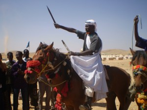

khatumo.net archive
With a Friend like Faroole, who needs a Foe
Published without a byline
February 15, 2012
With a friend like Faroole who needs a foe 
By O. Badawi
The SSC had a history of making sacrifices for the Somali cause for which they paid heavily, got little in return and expected none. First was the Darwish campaigns against the British colonisers in which close to a million people died, directly or indirectly, as a result of that struggle. Then there was their unquestioning support for SYL from the outset and the quest for independence . And it was their continued wish to save themselves and the union from its enemies that led them to be a partner in the establishment of the Puntland State of Somalia as a way of fending off the predatory, anti Somali (Soomaalidiid) secessionist authority based in Hargeisa.
As the SSC came to learn to their bitter regret and cost, joining Puntland has become like jumping from Somaliland’s frying pan into Puntland’s fire. For too long, it had been a one-way relationship in which the SSC (and others from NW Somalia) had been used for what they were worth. Even so, they had accepted their lot as if that was their role or as if they were hostage to fate and had no other option. That is the way Puntland administrations under various leaders have seen it.
Abdullahi Yusuf might have been a ruthless power-hungry despot who stopped at nothing to achieve his ends. But one has to give the devil his due : unlike the other charlatans after him, he was certainly more presidential who earned the respect of his people through firmness and fear and brought stability to the those parts of Puntland that mattered to him, something many of his people miss so much and yearn for in their present ballooning instability.
Unlike Puntland proper, the SSC regions had been taken for granted as add-on assets for Puntland, to be used when needed but otherwise they figured little in his considerations or those who came after him. Who can blame them when those who claimed to represent the SSC regions in the Puntland administration (and also Somaliland) rarely ever advocated or defended the interest or rights of their people but only pursue their own self-interests to the present day.
President Abdullahi Yusuf is the author of the SSC’s current doldrums under Somaliland occupation. That was triggered when he took away the SSC militia based at Adhicadeeye defending Lascanod. He did this in order to take care of his own personal defence and his government based at different times in Jowhar, Baidowa and later Mogadishu with scant consultations with the SSC people and total disregard for the defence of Lascanod and the rest of the SSC. Whether his action was a signal to Somaliland to attack and capture undefended Lascanod is a moot point. What is important is that that is the way Somaliland saw it and that is what they did, with no serious attempt by Puntland to defend the city and no finger raised since then to liberate it.
Then came Cadde Musse, a good natured little man, caricatured at times as a buffoon, for whom his world revolved around his immediate surroundings and his sub-clan’s fiefdom. Even Galkayo was a distant place inhabited by aliens. The SSC mattered even less. Indeed, he had more empathy for Hargeisa where he spent sometime in exile seeking refuge from Abullahi Yusuf’s long reach. It was during his presidency that Lascanod, the capital of Sool, was captured by Somaliland. The Puntland defenders simply deserted the city to its fate with hardly any resistance. Clearly, they were taking their cue from Garawe.
Cadde Muse’s crocodile tears and knee-jerk remonstrations for the capture of Lascanod were only meant for public consumption but otherwise no one took him seriously, least of all Somaliland which looked on him as an amusing comic figure. Many of those who would have defended Lascanod died in the south defending instead President Abdullahi Yusuf and his government with no thanks or reward to the SSC people or indemnity to their bereaved families.
The worst president Puntland had so far, certainly from the Khaatumo State’s perspective, is the incumbent one, better known as Faroole. Unscrupulous, venal and fiendish, he would have been better cast as a shady Hollywood gangster than one cut out for a president even for a God-forsaken place. People’s faces are like mirrors reflecting their true persona, and Faroole’s own is displayed all over his crooked face. No need to blame the suffering Puntlanders. It is not them who elect their presidents or parliamentarians in a free and fair elections. This is the preserve of an organised clan-based jamboree where money changes hands, sordid backroom deals done, and only those candidates with the deepest pockets and ready to pay selectors lavishly come on top. When that kind of practice rules, you get the leaders they produce a la Faroole- a true gangster if there was one.
Arrogant, abrasive and increasingly autocratic, Faroole has turned Puntland into his own family business, a la Bashir Assad and former deposed Arab dictators and autocrats. Unabashedly, he and his son greedily siphon off State resources as depicted vividly in Amin Amin’s cartoons. Under his presidency, Puntland has descended from its earlier enviable stability under president Abdullahi Yusuf into one where serious fault lines and schisms had opened up, lawlessness and targeted assassinations became routine, and some clans are openly threatening to withdraw from Puntland and form their own administrations, taking a leaf out of the SSC’s book. A domino effect is underway if not the demise of Puntland itself. How ironic that as the SSC rise up from its hole, Puntland under Faroole is heading that way.
When it comes to his bad blood with the SSC people, a little bit of Freudian psychoanalysis is in order. It all goes back to the time when he was a junior officer with one of the Somali national banks in Mogadishu. People who knew him from that era explain his current obvious antipathy towards the SSC people (now the Khaatumo State of Somalia) as dating back to this time and to his consuming bitter resentment against his former boss for holding up his promotions. Faroole, they said, never forgives and forgets and his hostility towards his now deceased boss has since metamorphosed into hatred and revenge against his SSC people.
Faroole’s deep rooted animus towards the SSC is clear from his current stance where he is determined to block all avenues and close all doors for the SSC to get out of its hole under Somaliland’s occupation: On the one hand, he does not want to free Lascanod as is incumbent upon Puntland’s administrations; on the other hand, he opposes and obstructs any SSC initiative to liberate their regions and establish their own administrations as he is now doing to Khaatumo State and did before to the SSC Hogaan; and worse, he will go to all extents to collude with Somaliland in order to perpetuate their concocted “dispute” over the territory in order to keep it out of sight and out of mind for the outside world for their different reasons and benefits.
Nothing shows Faroole’s treacherous animosity than his vindictive, mean speech the other day, in which he attacked the Khaatumo State and its founders, giving badly needed succour and support to Siilaanyo at a time when his wild dogs were mercilessly attacking Buuhoodle and tormenting the helpless people of Lascanod. It is no accident that these two neighbouring regional administrations were acting in unison in orchestrating their verbal and physical aggression against the Khaatumo State and its people.
In his speech, Faroole rubbished the legitimacy of the Khaatumo State on the ground that it was established “by few trouble makes from outside who threaten the peace of Somaliland and Puntland and disturb the stability of the region”. He has been echoing ad nauseam the same mantra from Somaliland. If Faroole and his Somaliland partners expect the world to believe that the Khaatumo State proclaimed by the Taleex conference – which was attended by nearly 2000 delegates and observers, and representing the entirety of the SSC civil society, including the diaspora, all the Garaads, Ogaas, sultans, chiefs, as well as religious leaders, women, etc and which was acclaimed inside and outside Somalia – was one masterminded by few troublemakers from outside, then they can only live in a cloud cuckoo land.
The other side of their argument is that the few SSC mercenaries, turncoats and guest workers in their pay are the true representatives of the SSC and that is why the SSC regions are part of Puntland or Somaliland as they both claim for their different reasons. Just to make the point, Faroole was flanked as he spoke by a beaming self-satisfied “vice president” Abdisamed Ali Shire and receiving rapturous applause from parliamentarians masquerading as the representatives of the SSC regions long after its people had left Puntland and formed their own separate Khaatumo State.
What puzzles many people within the SSC community and among the Somali people at large is that it should have taken them so long to form their Khaatumo State when this need was plainly overdue years ago long before so much damage and Somaliland’s occupation were inflicted on them. It is better late than never and all that matters now is that the Khaatumo State of Somalia has finally been established. And today, the resilient persevering people of the State are no longer holed up in their mire but are on the march undeterred by Faroole’s futile fulminations or Siilanyo marauding and murderous militia.
Despite the formation of their Khaatumo State, the people from the SSC regions will continue to maintain, and if anything strengthen, their unshakeable brotherly relations with the people of Puntland. Indeed, the SSC people are touched and grateful for the moral and material support they receive from them at this time of Siilaanyo’s aggression against Buuhooldle when Faroole in contrast is taking a different stand. Gaalkacyo above all had taken a special place in the hearts and minds of the SSC people. Winston Churchill was once asked what he thought of France. He replied that it would have been a great country if only without the French! Equally, Puntland would have been a splendid place without Faroole. Spare a thought for the great people of Puntland.
By Osman Hassan
Email: osman.hassan2@gmail.com